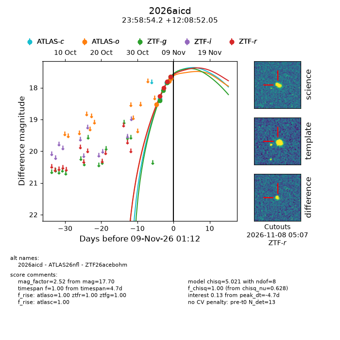
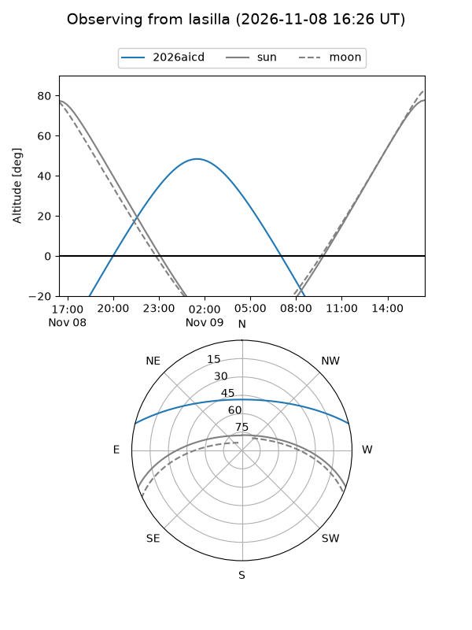
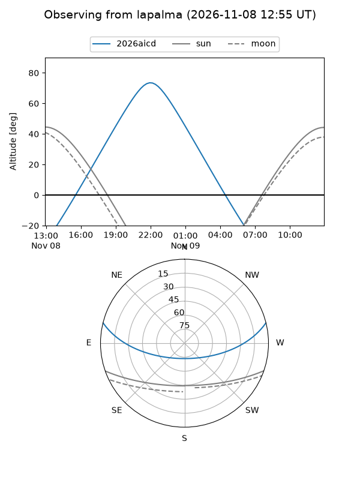
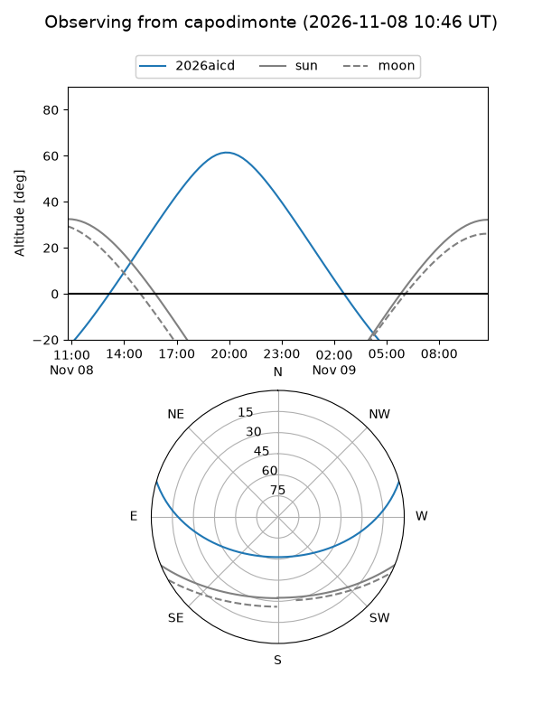
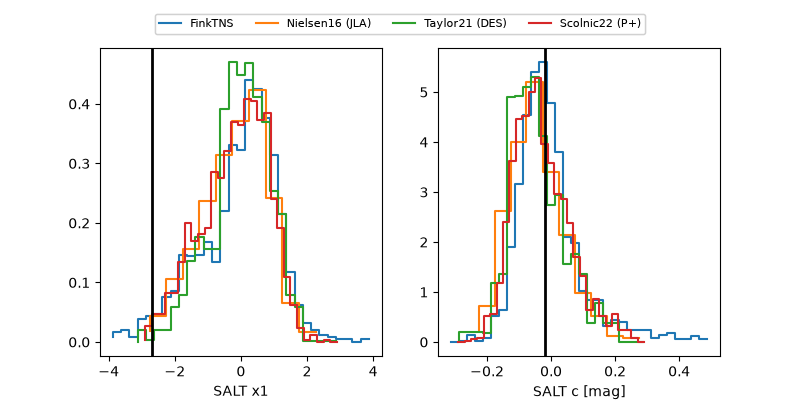

2026aicd
Target 2026aicd at 2026-11-09 01:14
Aliases and brokers:
FINK-ZTF: ztf.fink-portal.org/ZTF26acebohm
Lasair-ZTF: lasair-ztf.lsst.ac.uk/objects/ZTF26acebohm
ALeRCE-ZTF: alerce.online/object/ZTF26acebohm
YSE-PZ: ziggy.ucolick.org/yse/transient_detail/2026aicd
TNS name: wis-tns.org/object/2026aicd
Direct TNS query: direct search
alt names
ZTF26acebohm (ztf,fink_ztf)
2026aicd (tns,yse)
ATLAS26nfl (atlas)
Coordinates:
equatorial (ra, dec) = 359.7260,+12.14779
equatorial (HMS+DMS) = 23:58:54.25,+12:08:52.05
galactic (l, b) = (103.2614,-48.70722)
Flags:
peak dt: -4.7
Photometry:
last atlasc=17.83, atlaso=17.70, ztfg=17.66, ztfr=17.66
2 atlasc, 3 atlaso, 4 ztfg, 4 ztfr detections
Lightcurve

Visibility



Additional plots
